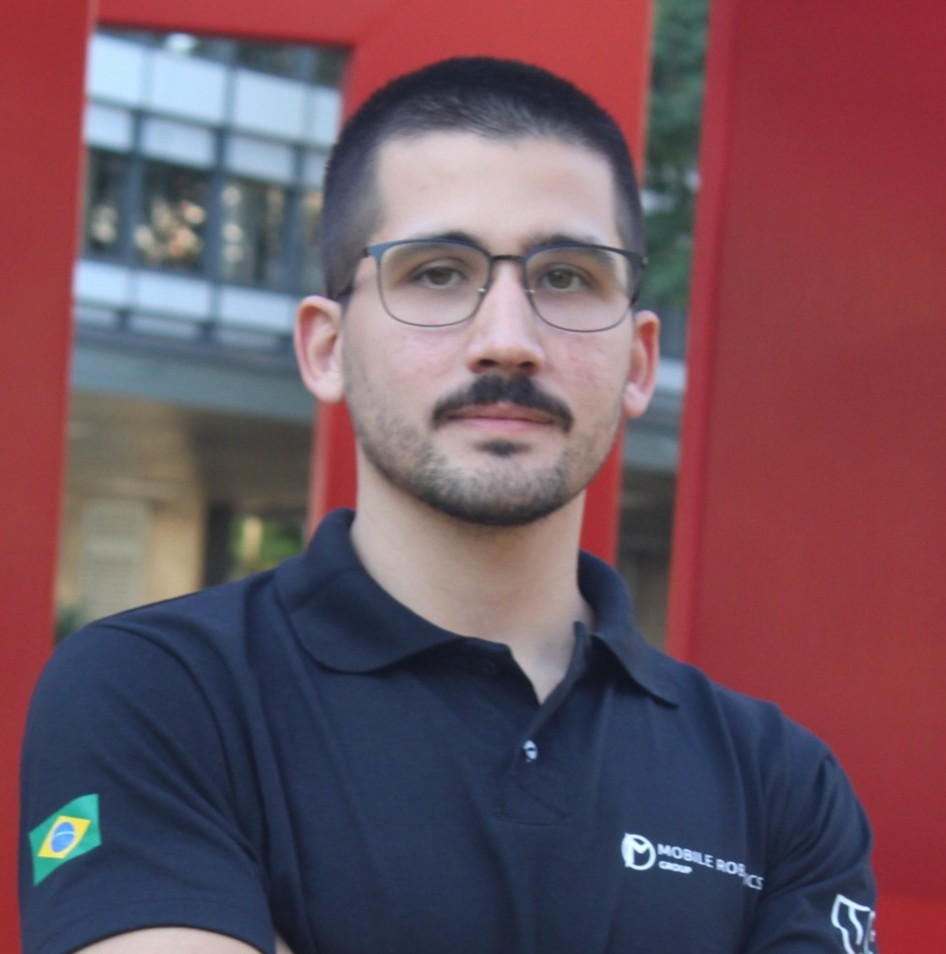

Postdoctoral Researcher · University of São Paulo
I build Physical AI — robots that are intuitive to control, safe around people, and that improve through experience. My work joins human intent, shared-control safety, and learning into systems that hold up under real-world constraints.
I work end-to-end — perception, intent, control, and evaluation — so that capable AI actually reaches deployment on real robots. Current threads: